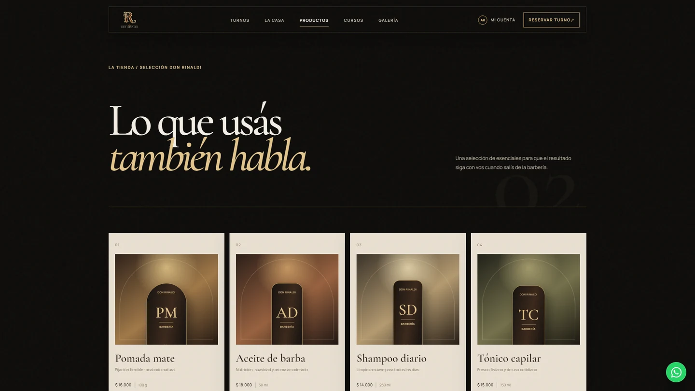

Separar experiencia y persistencia
El frontend consume la API. La base y sus adaptadores quedan detrás del backend.
Proyecto web para cliente
Identidad web y una aplicación de turnos desarrolladas para un cliente de barbería.

Conectar la presentación del negocio con servicios, disponibilidad, reservas y herramientas de administración, manteniendo separadas la experiencia pública y las operaciones internas.
Desarrollo de la solución web bajo Ingenia Software, con programación y herramientas de IA durante la implementación y las iteraciones. El trabajo combina presentación visual con flujos de aplicación.
El video recorre la portada, la propuesta y los contenidos/productos. No muestra iniciar sesión, reservar, pagar o administrar. Es un recorrido visual del desarrollo, no una demostración funcional completa de turnos.
Montaje de grabaciones existentes, sin audio y con rótulos descriptivos en español. Los cortes entre pantallas no representan tiempos de respuesta ni una operación continua.
El video recorre la portada, la propuesta y los contenidos/productos. No muestra iniciar sesión, reservar, pagar o administrar. Es un recorrido visual del desarrollo, no una demostración funcional completa de turnos.
El frontend consume la API. La base y sus adaptadores quedan detrás del backend.
La implementación contempla comprobar de nuevo la disponibilidad y manejar conflictos e identificación de solicitudes.
Los paquetes compartidos ayudan a mantener coherencia entre las partes del monorepo. La posibilidad de desplegar no se presenta como una publicación realizada.
Se desarrolló la solución para el cliente y el proyecto quedó sin puesta en producción. El caso presenta la experiencia visual y la arquitectura del trabajo realizado.
El código de la aplicación comercial se mantiene privado. El repositorio del caso reúne capturas, recorrido y documentación seleccionada.
Ver la documentación del caso
